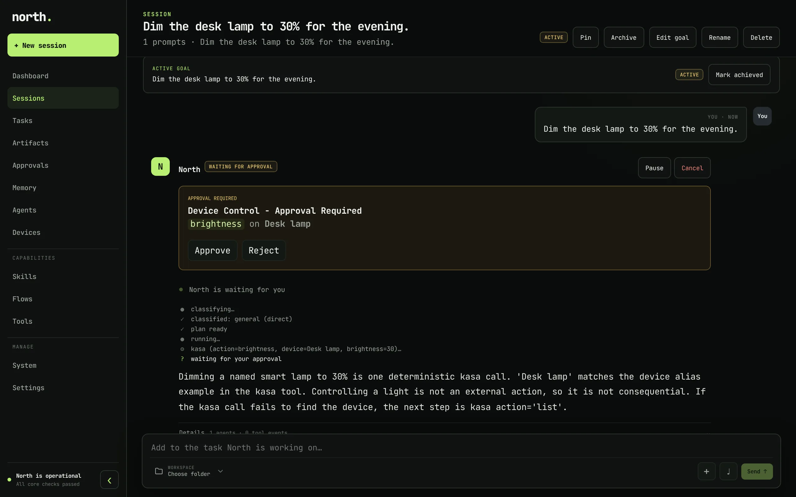
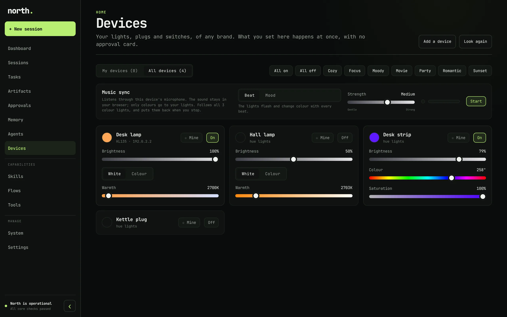

Works on your tasks
Research, writing, files and the web, with your own browser profile when a site needs you signed in. You see each step as it happens.
Open source · Runs on your computer
north works on your tasks: research, writing, code, your files, your browser, even your lights. It asks before it changes anything, and learns how you decide, so over time you can let it decide more.
curl -fsSL https://raw.githubusercontent.com/Kushagrabainsla/north/main/scripts/install.sh | bash

What it does
Tell north what you want in plain words, from the dashboard, the terminal or Telegram. It plans the steps, picks the tools and models, and shows you every step as it goes.
Research, writing, files and the web, with your own browser profile when a site needs you signed in. You see each step as it happens.
Every change comes to you as a card that shows exactly what will happen: the command, the diff, the file. Approve it, reject it, or answer its question.
It keeps what it learns about you as facts, and remembers your answers, so it can answer the next card the way you would.
Coding goes to Claude Code or Codex, in an isolated git copy. north runs your tests and offers you the change; nothing reaches your work until you say yes.
Flows run by themselves, in your time zone: a morning briefing, a nightly check, a reminder about the cards that are waiting for you.
Ask for something it cannot do yet and north writes a tool for it, tests it, and asks you before switching it on.
Kasa lights work out of the box; for any other brand, north writes the tool. Switch, dim and colour them, set scenes, or let them follow the music.
Each step goes to the model that fits it, across OpenRouter, Groq, Gemini, Anthropic and OpenAI Codex, and every run's cost is written down.
You decide
Pick one of four modes, and change it whenever you like. Start where every change asks you, and move along as north learns how you decide.
Read-only work runs; every change asks you.
Read-only work, safe changes and your exact past answers run; everything else asks.
Decides for you from what north knows about you. Asks only when that cannot decide.
Never asks you: every approval is yes, until you set another mode.
Yours
~/.north.
Get started
north is built for macOS, and most of it runs on Linux too. The installer brings everything it needs.
The installer sets up uv and installs north from GitHub.
curl -fsSL https://raw.githubusercontent.com/Kushagrabainsla/north/main/scripts/install.sh | bash
Setup walks you through each connection: AI providers, coding agents, browser profiles and Telegram.
north web
The same north, in a terminal interface. Type /help for its commands.
north